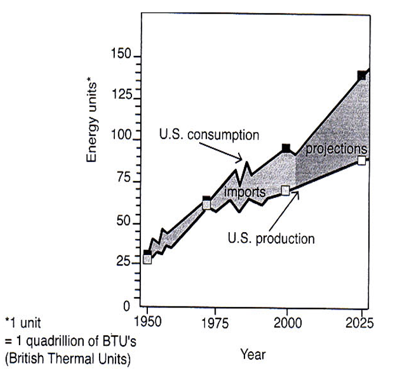

You should spend about 20 minutes on this task.
The graph below compares figures for the production and consumption of energy in
the US from 1950 to 2000. It also predicts figures for 2025.
Summarises the information be selecting and reporting the main features, and make
any comparisons where relevant.
You should write at least 150 words.

Word Count: 0
You should spend about 40 minutes on this task.
Write about the following topic.
The only way to reduce the amount of traffic in cities today is by reducing the
need for people to travel from home for work, education or shopping.
To what extent do you agree or disagree?
Give reasons for your answer and include any relevant examples from your own
knowledge or experience.
You should write at least 250 words.
Word Count: 0